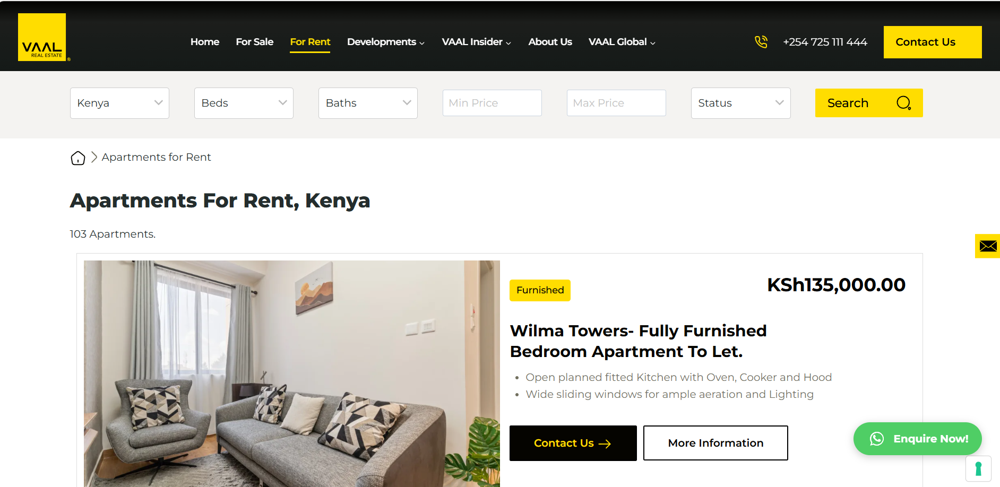
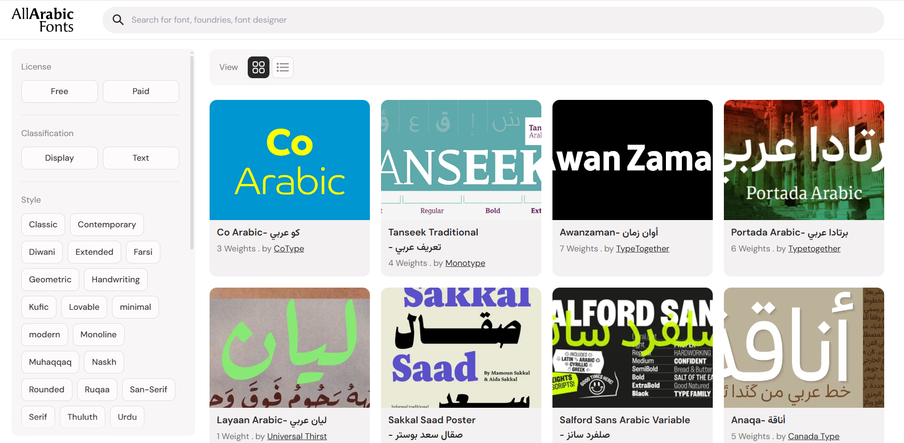
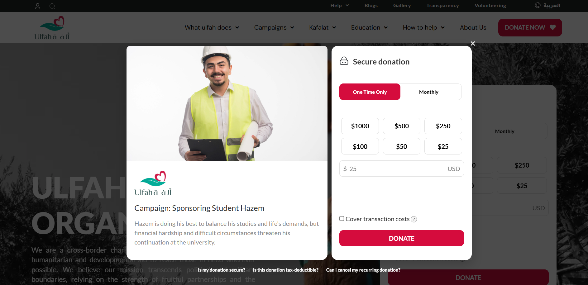
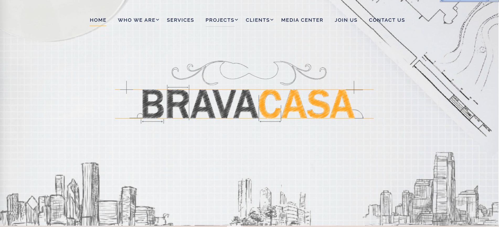
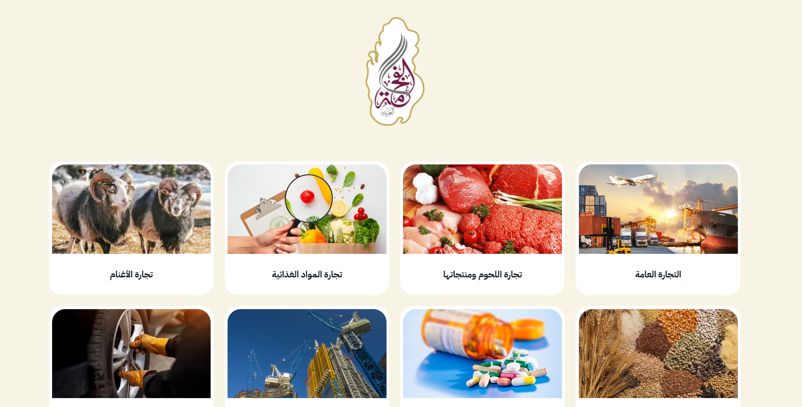

Advanced Real Estate Search
Custom property discovery experience with advanced filtering and search-friendly structure.
View live projectSenior Full Stack WordPress Developer
I build fast, scalable and SEO-friendly digital experiences — from custom WordPress themes and plugins to polished, high-performing websites that help businesses grow.

I’m Aya Omar, a Full Stack WordPress Developer passionate about building high-performance websites and practical digital solutions. I specialize in custom themes, plugin development, performance optimization and SEO-friendly implementation.
I combine thoughtful development with clean, responsive design to create websites that are easy to use, maintain and grow.
*Update these figures if your current portfolio metrics have changed.
The tools I use to build dependable, maintainable and search-friendly web experiences.
Custom themes, plugins and CMS solutions.
Reusable backend logic and integrations.
Interactive and dynamic experiences.
Responsive, semantic interfaces.
Data modeling and query optimization.
Speed, caching and Core Web Vitals.
Search-friendly site structure.
Version control and clean delivery.
From a new website to improving an existing one, I focus on outcomes that matter.
Modern, responsive themes tailored to your brand and workflow.
Custom functionality and integrations that extend WordPress.
Improve load times, technical quality and user experience.
Technical foundations that help search engines understand your site.
End-to-end features using PHP, JavaScript and MySQL.
Reliable updates, troubleshooting and ongoing improvements.
A selection of live websites and custom functionality. Explore each project to see the result.

Custom property discovery experience with advanced filtering and search-friendly structure.
View live project
A curated Arabic font platform with browsable collections and a user-friendly discovery flow.
View live project
Donation-focused website functionality designed to make giving clear and accessible.
View live project
A polished corporate website for an interior design brand, with a visual-first presentation.
View live project
A modern corporate web presence for a multi-sector trading company in Qatar.
View live projectA quick overview of the areas I focus on. Add or adjust specific roles and dates to match your CV.
Building custom themes, plugins, integrations and scalable web experiences.
Improving website speed, usability and technical search foundations.
Creating responsive interfaces and reliable application functionality.
Clarify the audience, business needs and what success should look like.
Use maintainable code, responsive layouts and practical WordPress solutions.
Test the experience, address performance and keep room for future growth.